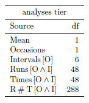
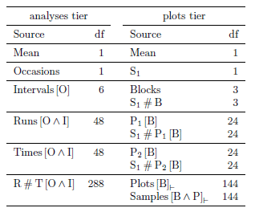
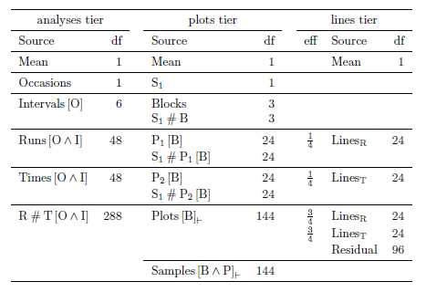
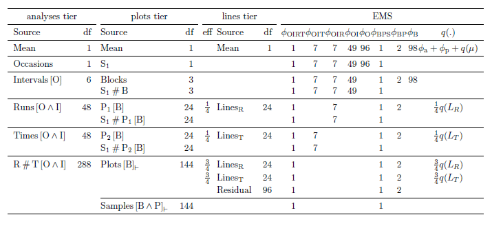

Deriving the anatomy table using the allocation for a duplicated wheat experiment
The sense in which the allocation is used is that it determines, via the tiers, the sources that will be included in the anatomy table.
Example 9 of Brien and Bailey (2006) is an experiment that consists of a field phase and a laboratory phase. In the field phase 49 lines of wheat are investigated using a randomized complete-block design with four blocks. Here the laboratory phase is modified by supposing that the procedure described by Brien and Bailey (2006) is repeated on a second occasion. That is, two samples will be obtained from each plot and one of them processed on the first occasion and the other on the second occasion. The figure below gives the factor-allocation diagram for the modified experiment that, because all allocation in the modified experiment was by randomization, is also a randomization diagram. Recall that a 7 x 7 balanced lattice square design with four replicates is used to assign the blocks, plots and lines to four intervals in each occasion. In each interval on one occasion there are seven runs at which samples are processed at seven consecutive times. Pseudofactors are introduced for lines and plots in order to define the design of the second phase.

An experimental design can be generated for this example and the anatomy table exhibiting its anatomy computed using the following R script; its output is here.
Deriving the anatomy table
The following diagram illustrates the procedure for deriving the anatomy table. Derivation of the table for the example follows the diagram or you can go to the derivation for a particular rectangle by clicking on it.
- Sets of objects and obervational unit The set of objects for this experiment are the lines, the samples and the analyses. Of these, the observational units are the analyses. It is the entity from which a single value of the response variable is obtained.
- Tiers The tiers for this experiment correspond to the factors that were (i) allocated in the field phase, (ii) the recipient factors in the field phase (and allocated in the laboratory phase), and (iii) the recipient factors in the laboratory phase. That is, there are 3 tiers as follows:
- Recipient laboratory
- {Occasions, Intervals, Runs, Times}
- Recipient field, allocated laboratory
- {Blocks, Plots, Samples}
- Allocated field
- {Lines}
Also, Plots are nested within Blocks and Samples are nested within Blocks and Plots; Intervals are nested within Occasions and both Runs and Times are nested within Occasions and Intervals. This nesting reflects the randomizations performed for the design.
Note that the tiers form disjoint sets of factors, the sets differing in their status in the allocation. Factors in different tiers have been associated by allocation, those within have not.
Now, if desired, the factor-allocation diagram for this example can be constructed. The first step in doing so is to place each of these 3 tiers in a panel, adding the nesting factors to those factors that are nested within others. Then the arrows, lines and symbols that detail the allocation would be added.
More explanation
- Intratier formulae Given the nesting shown in the panels of the factor-allocation diagram and the pseudofactors shown, the intratier formulae for this experiment are as follows:
2 Occasions / 4 Intervals / (7 Runs * 7 Times)
(4 Blocks / (49 Plots // (7 P1 + 7 P2)) / 2 Samples) // (S1 / Blocks / (P1 + P2))
49 Lines // (7 L1 + 7 L2 + 7 L3 + 7 L4 + 7 L5 + 7 L6 + 7 L7 + 7 L8)
It is noted that the pseudofactors are omitted when the anatomy table is produced using the function designAnatomy from dae, a package for the R statistical computing environment (See theR script).
More explanation
- Analysis formulae There are no intertier interactions thought relevant for this experiment. More explanation
- Derive the anatomy table The anatomy table is derived by performing a circuit of the loop in the diagram as follows:
- Derive the terms and sources from each formula in turn More explanation
- Incorporate current sources and their degrees of freedom into the anatomy table. More explanation
- Using first-letters for the factors, the first formula expands as follows.
O / I / (R * T) = O + O^I + O^I^R + O^I^T + O^I^R^TThe sources and their degrees of freedom are listed in the following first major column of the anatomy table: - The second formula expands as follows:
(B / (P // (P1 + P2)) / S) // (S1 / B / (P1 + P2)) = B + B^P1 + B^P2 + B^P + S1 + B^S1 + B^S1^P1
+ B^S1^P2 + B^P^S. The sources and their degrees of freedom are listed in the second major column of the following anatomy table:
 Note that different parts of Samples[Blocks^Plots], specified by the pseudofactors, are confounded with each of the analyses sources. The last source has a horizontal ⊥ as a subscript indicating that it is the part of the Samples[Blocks^Plots] source that is residual to the S1 pseudofactor sources. Further, different parts of Plots[Blocks] are confounded with the Runs[O^I], Times[O^I] and Runs#Times[O^I} sources. - The third formula expands as follows: L // (L1 + L2 + L3 + L4 + L5 + L6 + L7 + L8) = L1 + L2 + L3 + L4 + L5 + L6 + L7 + L8 + L = LinesR + LinesT + L where LinesR and LinesT are is the sums of the odd-numbered and even-numbered L pseudofactors respectively. The sources and their efficiency factors and degrees of freedom are listed in the third major column of the following anatomy table:
 Here Lines is confounded with Plots[Blocks], which is spread over three analyses sources as mentioned in the discussion of the second formula. Clearly, an advantage of the anatomy table is that it displays the confounding in the experiment.
- Categorize terms as fixed or random One division of factors into fixed and random is as follows:
- Random
- Occasions, Intervals, Runs, Times, Blocks, Block, Samples
- Fixed
- Lines
- Derive the expected mean squares and add to form the skeleton analysis-of-variance table Let the canonical components from the first formula be φO, φOI, φOIR, φOIT and φOIRT (with φa for the Mean). Similarly those from the second formula are φB, φBP and φBPS (with φp for the Mean). Also let q(LR) and q(LT) be the quadratic forms for the sources corresponding to the fixed Lines term. Then the expected mean squares are given in the last major column of the anatomy table.
More explanation
